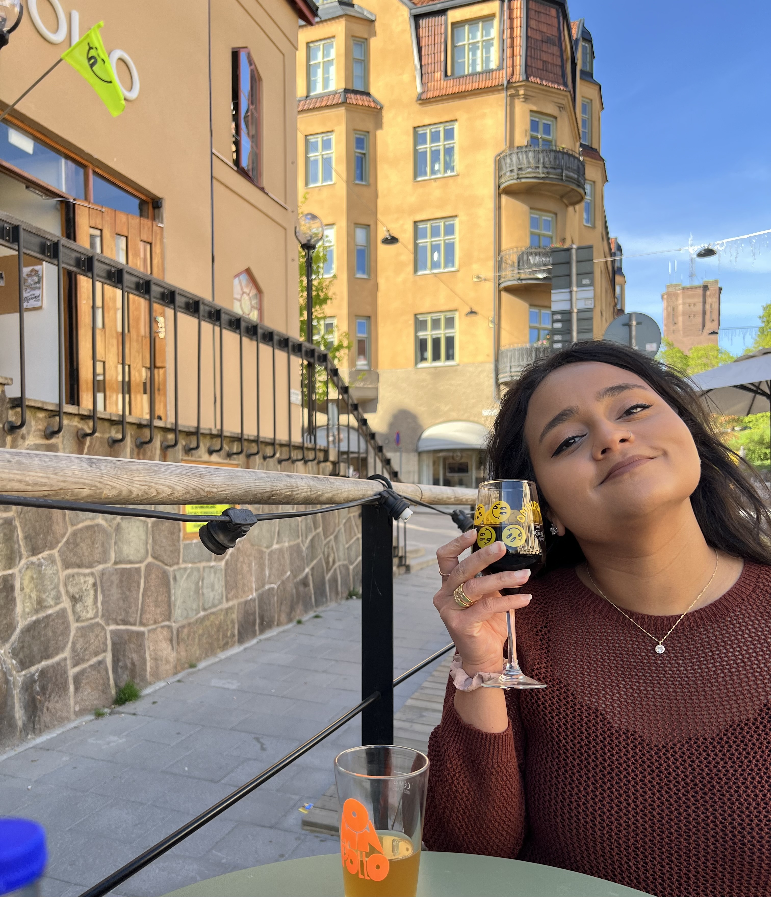

Tips, tricks, and suggestions to feel like a local, without the headaches of traveling
Traveling can be overwhelming!
It can be very challenging to coordinate an itinerary - what to plan for, what to
see, how to maximize your time away... while also thinking about what to pack!
This is where you can take a deep breath, relax, and
let me help!
You'll be able to find some fun in planning for traveling - as much as it is to
travel, BELIEVE ME!
Secrets to stress-free Traveling
How do you figure out where to go? What to see? Where to eat? Shop? Stay? Lots of questions, I know!
Step-by-step, you will learn tricks and tips about it all. Maybe, you can start to be the expert
traveler amongst your friends and family.
Be sure to subscribe
to the blog to stay updated and connected to new finds and tips!
About Me

Hey there! I'm Sina I'm a travel hobbyist - I travel to learn, enjoy, and embrace culture!
I used to think traveling was not very interesting; it felt as though all places held the
same environment - lots of tourists, busy, and the food was overrated.
I stopped researching and looking up "popular things to do" and started to look at what interested me -
whether it is related to art, music, certain foods and atmospheres. I became obsessed with traveling and learning
since! I've traveled around the US and UK (England and Scotland), Canada, Belgium, the Netherlands,
Denmark, Sweden, France, and Japan! This list is still growing.
When I am not traveling, I am a mental health therapist and software developer, avid concert goer, craft beer
enthusiast, and an amateur cook😋